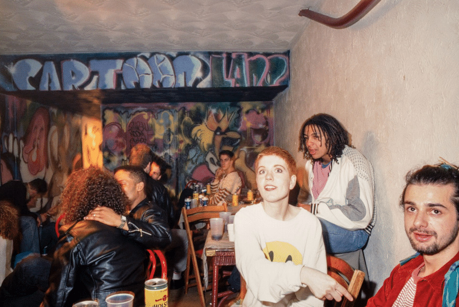

Opkomst van housemuziek in Groot-Brittanië
Het begin
Terwijl in Amerika er al sinds 1983 aan de weg werd getimmerd met housemuziek, duurde het pas tot 1986 dat house muziek Europa bereikte. In de nasleep van de disco beweging dat ook ontstond uit de zwarte, latino en queer gemeenschappen in de begin jaren 80 en overkwam naar Europa via Ibiza. In Ibiza begon de opmars en van daaruit bereikte het Groot brittanië, daar werd het snel bekend onder de jongeren. Mede door de club The Haçienda die een legendarisch status heeft gehad. De housemuziek die op dat moment gemaakt werd in de UK klonk net even anders dan de soulful warme house uit de Verenigde Staten. Acid house werd geïntroduceerd, de eerste nummer die op Acid house leek kwam eigenlijk ook uit Chicago, gemaakt door de groep Phuture met het nummer Acid Tracks. De groep Phuture maakt in 1987 met Acid Tracks de meest bizarre, spacy housetrack tot op dat moment. Een nieuw subgenre is geboren: acid house. Deze track werd populair in Engeland. De stijl wordt met name in Londen en Manchester een groot succes.De herkomst van Acid house refereert volgens sommigen ook naar de drugs die er tijdens de clubavonden van Ron Hardy werd gebruikt. En Als een olievlek verspreidde de muziek zich over de UK.
Second summer of love
Nicky Holloway, Paul Oakenfold, Danny Rampling en Johnny Walker waren in september 1987 op Ibiza in de club Amnesia, hier kwamen ze in aanraking met house muziek en mede drug MDMA en dit zorgde voor de start van de muziekstroming in Groot-Brittanië. Dit was de start van de Engelse rave-scene en in bredere zin de start van de housecultuur in Europa. Danny Rampling opende na deze ervaring de club Shoom in Zuid-London. Dit was een poging om de sfeer te vangen die hij op Ibiza had gehad en de start hiervan zorgde voor grote bekendheid van de muziekstroming in Engeland. De welbekende smiley is ook in de Shoom bedacht voor een clubavond. Deze werd later de mascotte van acid house in het geheel. In Manchester werd de rave scene gestimuleerd door vertegenwoordigers van de Factory Records label, welbekend van de band New Order. Zij openden de club Haçienda. O.a deze clubs pioneerden op dit gebied in Groot-Brittanië en zo werd de culturele stroming steeds groter, gëinspireerd hierdoor organiseerden mensen eigen bijeenkomsten op lege vlaktes weiland, leegstaande fabrieksgebouwen enzovoort. De Second Summer of Love zag haar geboorte..
